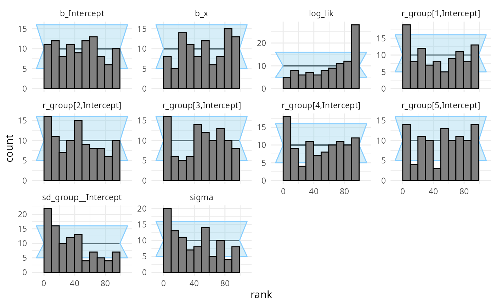
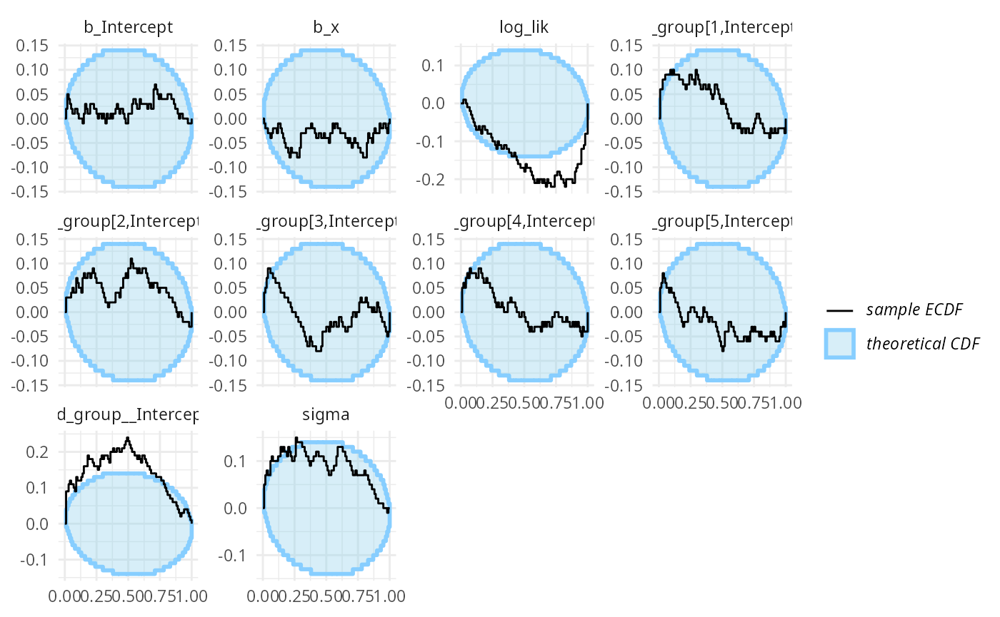
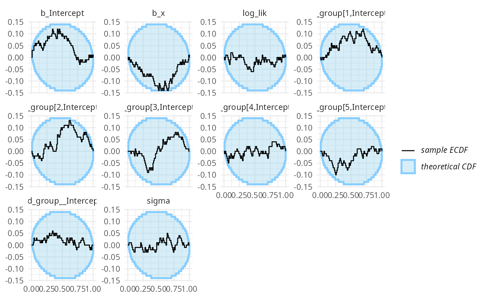

SBC for brms models
Martin Modrák
2021-09-26
brms.RmdThis vignette shows how the SBC package supports brms models. Let’s setup the environment:
library(SBC)
library(brms)
library(ggplot2)
options(brms.backend = "cmdstanr")
# options(brms.backend = "rstan") # Uncomment to use rstan instead
# Using parallel processing
library(future)
plan(multisession)
# The fits are very fast,
# so we force a minimum chunk size to reduce overhead of
# paralellization and decrease computation time.
options(SBC.min_chunk_size = 5)
# Setup caching of results
cache_dir <- "./brms_SBC_cache"
if(!dir.exists(cache_dir)) {
dir.create(cache_dir)
}
Generating data using brms
The brms package has a built-in feature to simulate from prior corresponding to the model via the sample_prior = "only" option. This is a bit less useful in model validation as bug in brms (or any mismatch between what brms does and what we think it does) cannot be found as it will most likely affect the generator and the backend in the same way. Still this can be useful for validating brms itself - we’ll get to validation with custom generators in a while. For now, we’ll build a generator using brms directly.
Generating datasets with this generator requires us to compile a Stan model and may thus take a while. Also the exploration is often problematic, so to avoid problems, we take a lot of samples and thin the resulting samples heavily.
# We need a "template dataset" to let brms build the model.
# The predictor (x) values will be used for data generation,
# the response (y) values will be ignored, but need to be present and
# of the correct data type
set.seed(213452)
template_data = data.frame(y = rep(0, 15), x = rnorm(15))
priors <- prior(normal(0,1), class = "b") +
prior(normal(0,1), class = "Intercept") +
prior(normal(0,1), class = "sigma")
generator <- SBC_generator_brms(y ~ x, data = template_data, prior = priors,
thin = 50, warmup = 10000, refresh = 2000,
# Will generate the log density - this is useful,
#but a bit computationally expensive
generate_lp = TRUE
)
set.seed(22133548)
datasets <- generate_datasets(generator, 100)## Running MCMC with 1 chain...
##
## Chain 1 Iteration: 1 / 15000 [ 0%] (Warmup)
## Chain 1 Iteration: 2000 / 15000 [ 13%] (Warmup)
## Chain 1 Iteration: 4000 / 15000 [ 26%] (Warmup)
## Chain 1 Iteration: 6000 / 15000 [ 40%] (Warmup)
## Chain 1 Iteration: 8000 / 15000 [ 53%] (Warmup)
## Chain 1 Iteration: 10000 / 15000 [ 66%] (Warmup)
## Chain 1 Iteration: 10001 / 15000 [ 66%] (Sampling)
## Chain 1 Iteration: 12000 / 15000 [ 80%] (Sampling)
## Chain 1 Iteration: 14000 / 15000 [ 93%] (Sampling)
## Chain 1 Iteration: 15000 / 15000 [100%] (Sampling)
## Chain 1 finished in 0.2 seconds.Now we’ll build a backend matching the generator (and reuse the compiled model from the generator)
backend <- SBC_backend_brms_from_generator(generator, chains = 1, thin = 1,
init = 0.1)
# More verbose alternative that results in exactly the same backend:
# backend <- SBC_backend_brms(y ~ x, template_dataset = template_data, prior = priors, warmup = 500, iter = 1000, chains = 1, thin = 1
# init = 0.1)Compute the actual results
results <- compute_results(datasets, backend, thin_ranks = 10,
cache_mode = "results",
cache_location = file.path(cache_dir, "first"))## Results loaded from cache file 'first'## - 10 (10%) fits had at least one Rhat > 1.01. Largest Rhat was 1.018.## - 62 (62%) fits had some steps rejected. Maximum number of rejections was 5.## Not all diagnostics are OK.
## You can learn more by inspecting $default_diagnostics, $backend_diagnostics
## and/or investigating $outputs/$messages/$warnings for detailed output from the backend.There are some problems, that we currently choose to ignore (the highest Rhat is barely above the 1.01 threshold, so it is probably just noise in Rhat computation).
So we can inspect the rank plots. There are no big problems at this resolution.
plot_rank_hist(results)
plot_ecdf_diff(results)
Using custom generator code
Let’s take a bit more complex model - with a single varying intercept.
This time we will not use the brms model to also simulate from prior, but simulate using an R function. This way, we get to learn if brms does what we think it does!
Custom generator code also allows us to have different covariate values for each dataset, potentially improving sensitivity if we want to check the model for a range of potential covariate values. If on the other hand we are interested in a specific dataset, it might make more sense to use the predictors as seen in the dataset in all simulations to focus our efforts on the dataset at hand.
Let’s take a Gaussian model with a single varying intercept.
The data can be generated using the following code - note that we need to be careful to match the parameter names as brms uses them. You can call parnames on a fit to see them.
one_dataset_generator <- function(N, K) {
# N - number of datapoints, K number of groups for the varying intercept
stopifnot(3 * K <= N)
x <- rnorm(N) + 5
group <- sample(1:K, size = N, replace = TRUE)
# Ensure all groups are actually present at least twice
group[1:(3*K)] <- rep(1:K, each = 3)
b_Intercept <- rnorm(1, 5, 1)
b_x <- rnorm(1, 0, 1)
sd_group__Intercept <- abs(rnorm(1, 0, 0.75))
r_group <- matrix(rnorm(K, 0, sd_group__Intercept),
nrow = K, ncol = 1,
dimnames = list(1:K, "Intercept"))
sigma <- abs(rnorm(1, 0, 3))
predictor <- b_Intercept + x * b_x + r_group[group]
y <- rnorm(N, predictor, sigma)
list(
parameters = list(
b_Intercept = b_Intercept,
b_x = b_x,
sd_group__Intercept = sd_group__Intercept,
r_group = r_group,
sigma = sigma
),
generated = data.frame(y = y, x = x, group = group)
)
}
n_dataset_generator <- SBC_generator_function(one_dataset_generator, N = 18, K = 5)For increased sensitivity, we also add the log likelihood of the data given parameters as a generated quantity that we’ll also monitor (see the limits_of_SBC vignette for discussion on why this is useful).
log_lik_gq_func <- generated_quantities(
log_lik = sum(dnorm(y, b_Intercept + x * b_x + r_group[group], sigma, log = TRUE)))
set.seed(12239755)
datasets_func <- generate_datasets(n_dataset_generator, 100)This is then our brms backend - note that brms requires us to provide a sample dataset that it will use to build the model (e.g. to see how many levels of various varying intercepts to include):
priors_func <- prior(normal(0,1), class = "b") +
prior(normal(5,1), class = "Intercept") +
prior(normal(0,5), class = "sigma") +
prior(normal(0,0.75), class = "sd")
backend_func <- SBC_backend_brms(y ~ x + (1 | group),
prior = priors_func, chains = 1,
template_dataset = datasets_func$generated[[1]])So we can happily compute:
results_func <- compute_results(datasets_func, backend_func, thin_ranks = 10,
gen_quants = log_lik_gq_func,
cache_mode = "results",
cache_location = file.path(cache_dir, "func"))## Results loaded from cache file 'func'## - 34 (34%) fits had at least one Rhat > 1.01. Largest Rhat was 1.085.## - 6 (6%) fits had tail ESS undefined or less than half of the maximum rank, potentially skewing
## the rank statistics. The lowest tail ESS was NA.
## If the fits look good otherwise, increasing `thin_ranks` (via recompute_statistics)
## or number of posterior samples (by refitting) might help.## - 33 (33%) fits had divergent transitions. Maximum number of divergences was 81.## - 2 (2%) fits had iterations that saturated max treedepth. Maximum number of max treedepth was 553.## - 77 (77%) fits had some steps rejected. Maximum number of rejections was 6.## Not all diagnostics are OK.
## You can learn more by inspecting $default_diagnostics, $backend_diagnostics
## and/or investigating $outputs/$messages/$warnings for detailed output from the backend.So that’s not looking good! Divergent transitions, Rhat problems… And the rank plots also show problems:
plot_rank_hist(results_func)
plot_ecdf_diff(results_func)
It looks like there is a problem affecting at least the b_Intercept and sigma parameters. We may also notice that the log_lik (log likelihood derived from all the parameters) is copying the behaviour of the worst behaving parameter. This tends to be the case in many models, so in models with lots of parameters, it can be useful to add such a term as they make noticing problems easier.
What happened is that brms by default centers all the predictors, which changes the numerical values of the intercept (but not other terms). The interaction with the prior than probably also affects the other parameters.
Maybe we don’t want brms to do this — using 0 + Intercept syntax avoids the centering, so we build a new backend that should match our simulator better
# Using 0 + Intercept also changes how we need to specify priors
priors_func2 <- prior(normal(0,1), class = "b") +
prior(normal(5,1), class = "b", coef = "Intercept") +
prior(normal(0,5), class = "sigma") +
prior(normal(0,0.75), class = "sd")
backend_func2 <- SBC_backend_brms(y ~ 0 + Intercept + x + (1 | group),
prior = priors_func2, warmup = 1000, iter = 2000, chains = 1,
template_dataset = datasets_func$generated[[1]])Let’s fit the same datasets with the new backend.
results_func2 <- compute_results(datasets_func, backend_func2, thin_ranks = 10,
gen_quants = log_lik_gq_func,
cache_mode = "results",
cache_location = file.path(cache_dir, "func2"))## Results loaded from cache file 'func2'## - 20 (20%) fits had at least one Rhat > 1.01. Largest Rhat was 1.074.## - 1 (1%) fits had tail ESS undefined or less than half of the maximum rank, potentially skewing
## the rank statistics. The lowest tail ESS was 46.
## If the fits look good otherwise, increasing `thin_ranks` (via recompute_statistics)
## or number of posterior samples (by refitting) might help.## - 4 (4%) fits had divergent transitions. Maximum number of divergences was 1.## - 1 (1%) fits had iterations that saturated max treedepth. Maximum number of max treedepth was 530.## - 80 (80%) fits had some steps rejected. Maximum number of rejections was 8.## Not all diagnostics are OK.
## You can learn more by inspecting $default_diagnostics, $backend_diagnostics
## and/or investigating $outputs/$messages/$warnings for detailed output from the backend.We see that this still results in some problematic fits, but the proportion got lower. At this point I am honestly unsure what is the issue, but the rank plots look mostly OK:
plot_rank_hist(results_func2)
plot_ecdf_diff(results_func2)
I promise to update this vignette once I figure out the source of the problems.